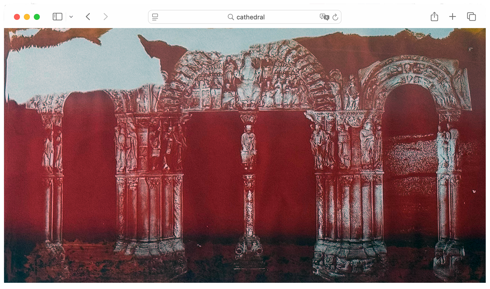
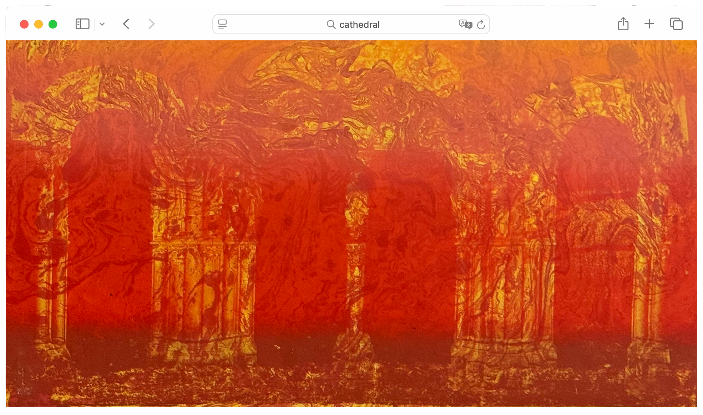
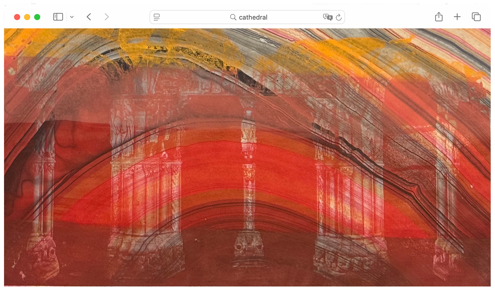
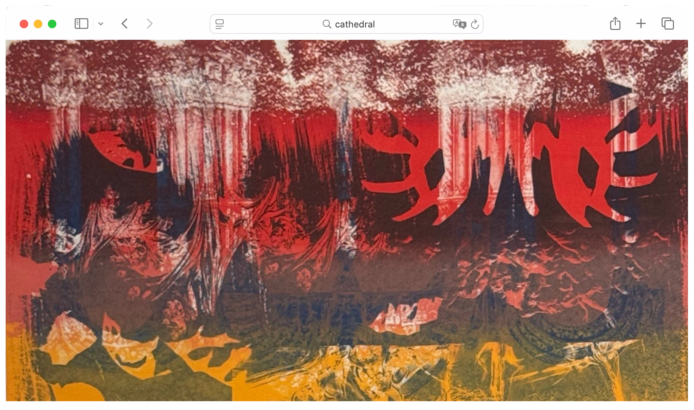
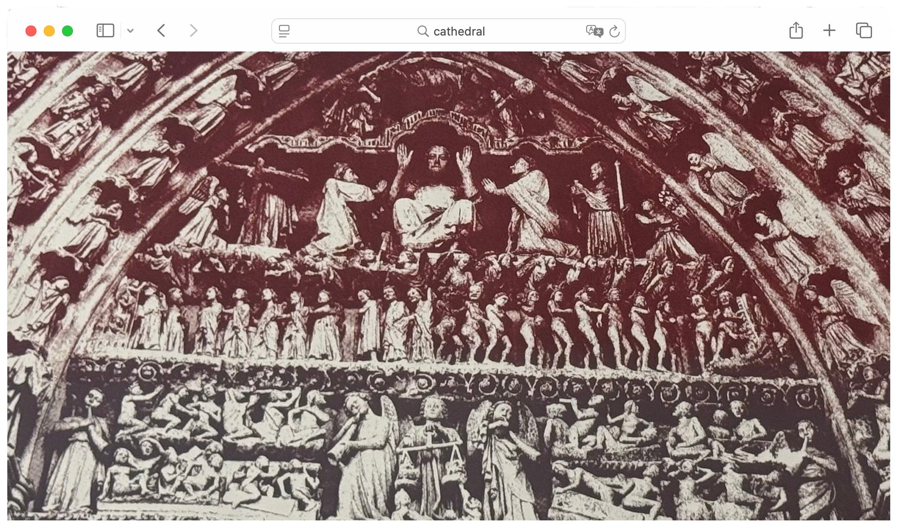
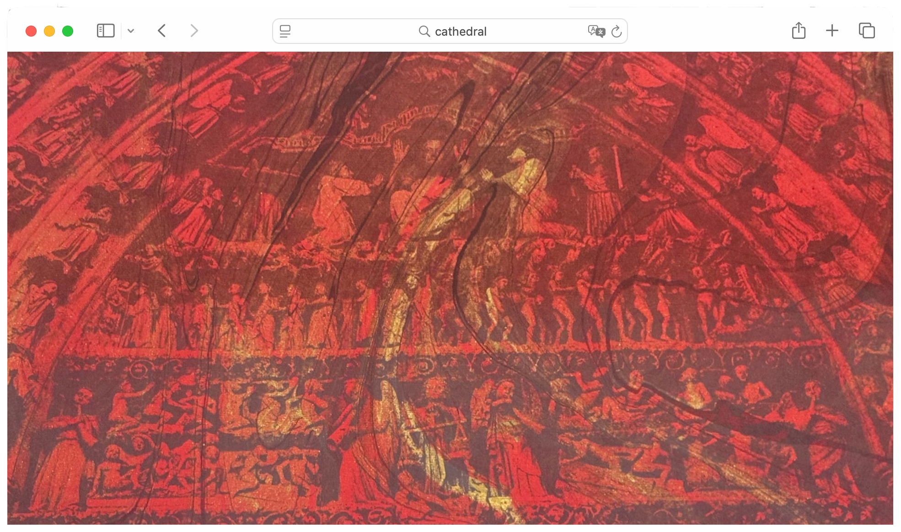
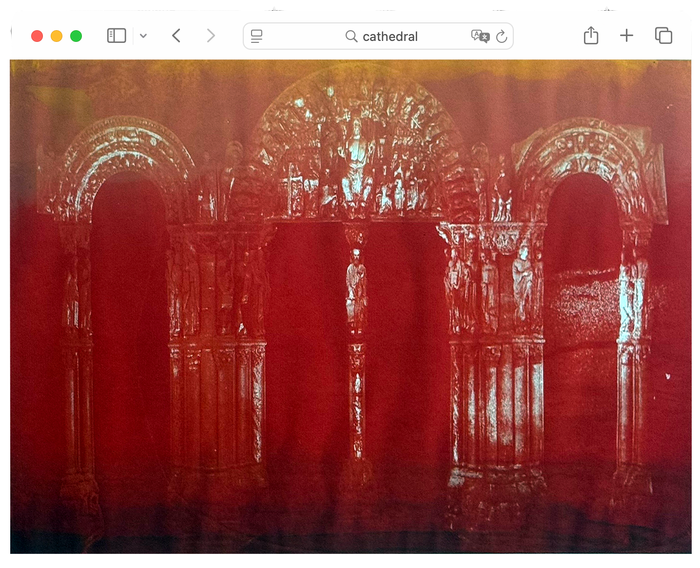
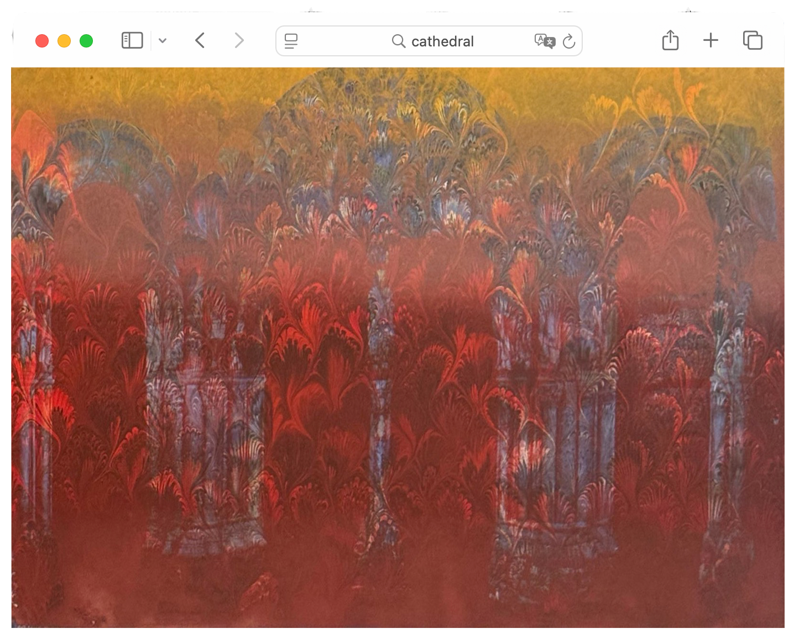
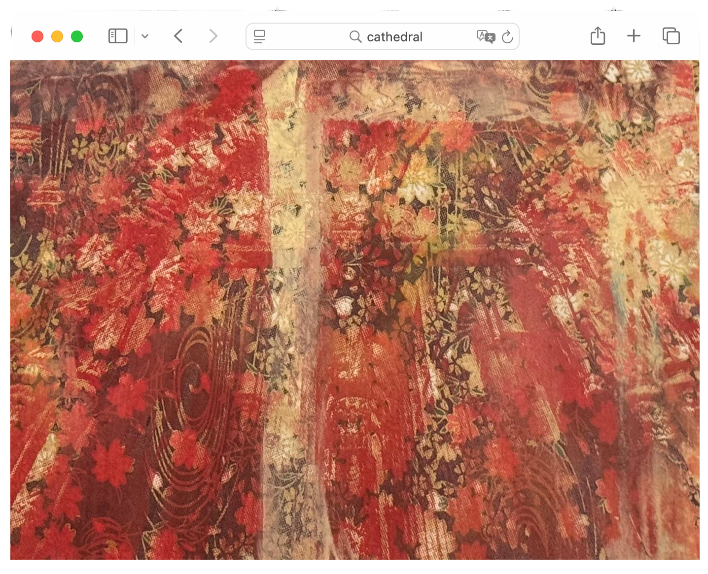
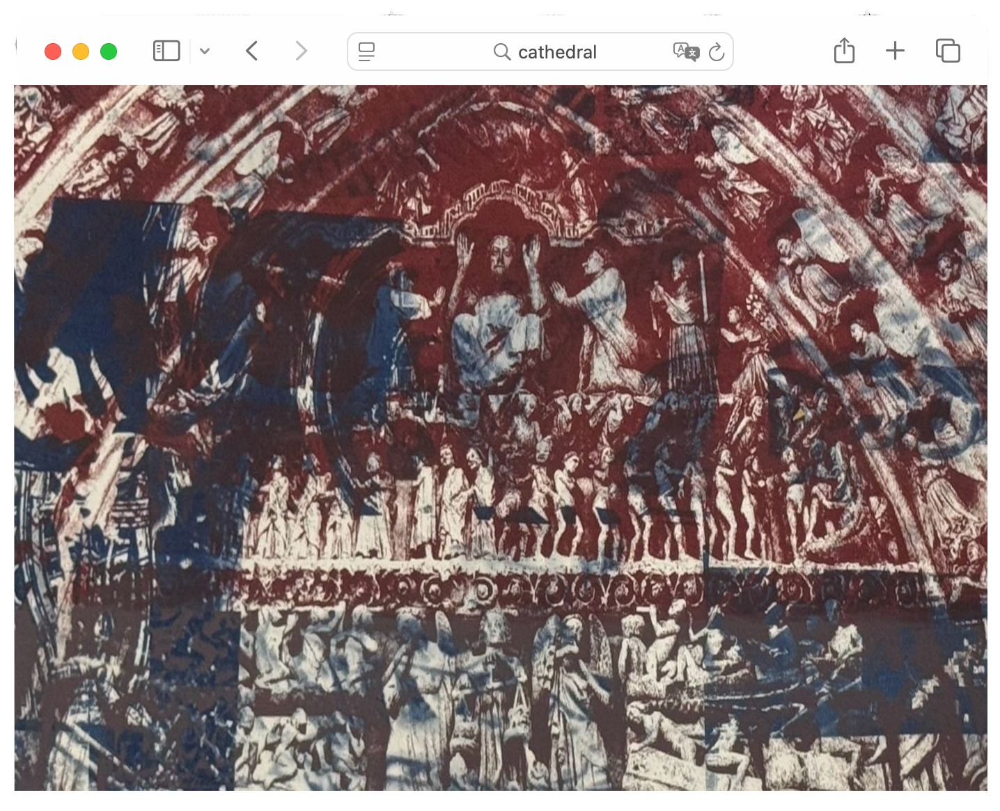
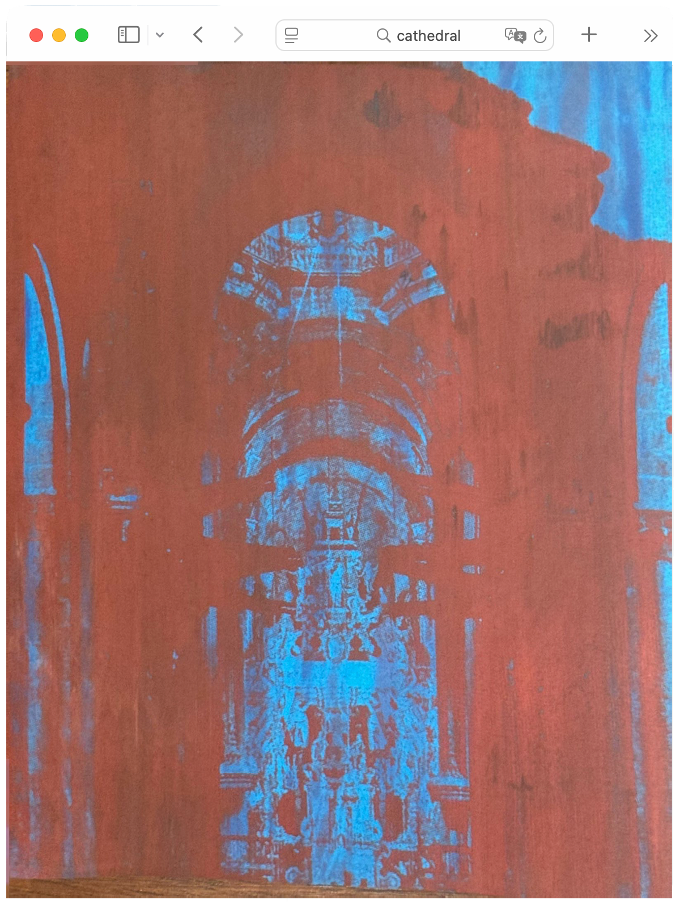
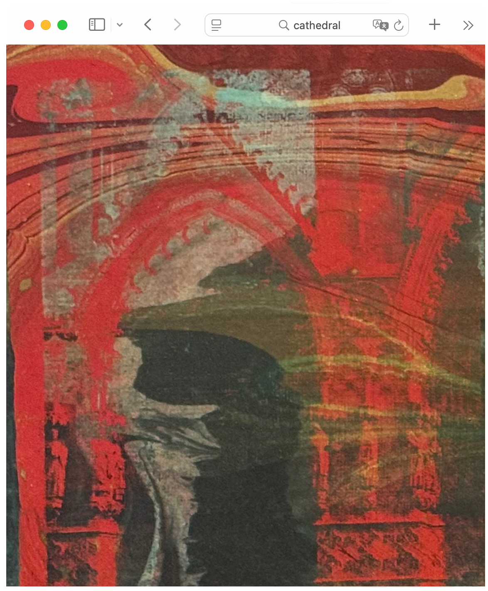
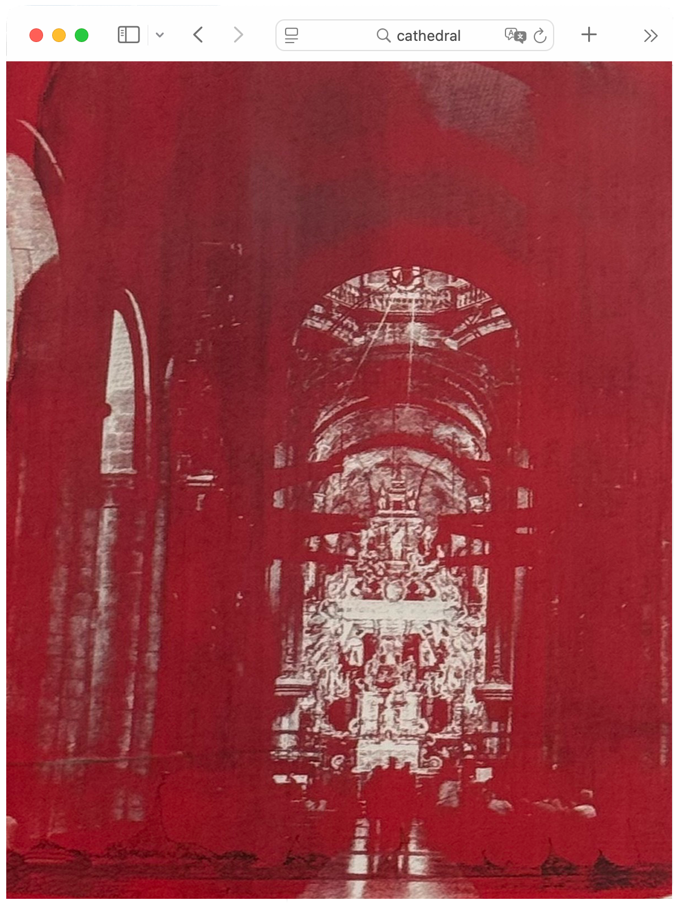
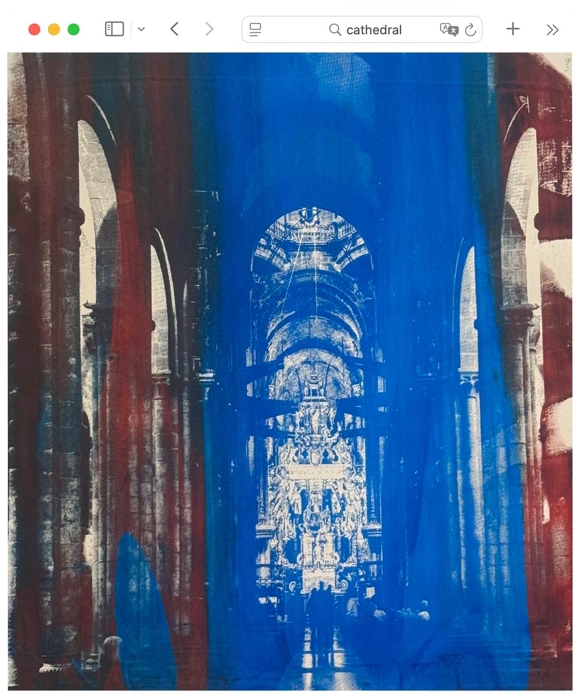
The system consumed all 14
Sometimes we feel seen, like how a bright cathedral print
appears when you click.
But hope is consumed by the system below.
After it consumes our data, it devours the earth. Click to witness.